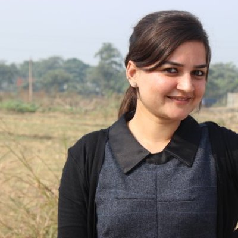

FACULTIES OF LPU
Lovi Raj Gupta
Executive Dean Lovely Professional University
Indian Institute of Technology, Kanpur
Dr. Lovi Raj Gupta is the Executive Dean, Faculty of Technology & Sciences, Lovely Professional University.
He is a leading light in the field of Technical and Higher education in the country. His research focused approach and an insightful innovative intervention of technology in education has won him much accolades and laurels.
He holds a PhD in Bioinformatics. He did his M.Tech. in Computer Aided Design & Interactive Graphics from IIT, Kanpur and B. E. (Hons) from MITS, Gwalior.

Ankur Sodhi
Deputy Director & Associate Professor at Lovely Professional University
Punjab Technical University
Passionate to learn new things, face new challenges & train people. Love Public Speaking , Leading teams and I
yearn to be a perfect blend of a Trainer, Educationalist and Administrator
Amandeep Nagpal
Associate Dean at Lovely Professional University
Computing and IT professional with a rich experience of over 17 years in teaching & academic administration. A systematic educationist imparting knowledge in an ideal way to help students design path breaking systems in Computing and Information Technology.

Rajeev Sobti
Additional Dean and Associate Professor at Lovely Professional University
Punjab Technical University
Currently working as Additional Dean and Associate Professor in Lovely Professional University, Punjab and job profile has multifaceted roles spanning Teaching, Administration (academic as well as allied), Research and Educational management.

Karanvir Kaur
Assistant Professor at Lovely Professional University
Panjab University
Assistant Professor at Lovely Professional University,Lovely Professional University Panjab University,Sangrur, Punjab, India